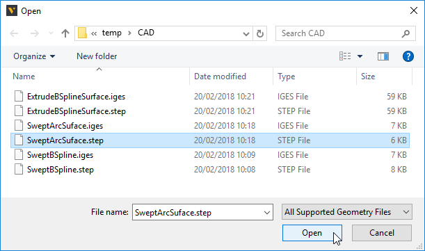
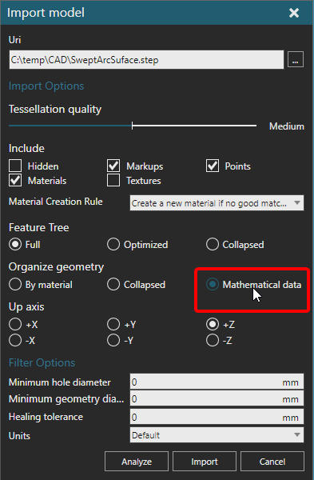
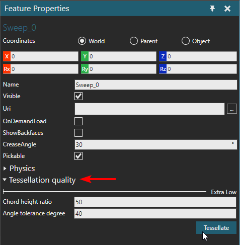

Importing Mathematical Data
You can import the mathematical data of a supported CAD file, for example
boundary representations (BREP) and curves.
Note: This task was made using this CAD
file.
- Either from the Home
tab or Modeling tab, in the Import
group, click Geometry.
- Select the CAD file you want to import as a new
component.

- In the Import model task
pane, under Organize geometry, click Mathematical data. This will organize geometry
one triangle set per face and store a BREP entity in a triangle set.

- Click Import to import
the file.

After importing the mathematical data, you have the option to change
the tessellation of geometry at the feature level.
- Access the Modeling
tab, and then select a Geometry feature
containing imported geometry.

- In the Feature Properties
panel, expand Tessellation quality. This
section allows you to modify the tessellation of geometry sets, thereby
make it more coarse or fine. For example, you can use the slider to
select a setting of Extra Low, Low, Medium, High or Extra High. You
can customize the setting by editing the Chord height ratio and Angle
tolerance degree properties.

- Set Tessellation quality
to Extra Low, and then click Tessellate.
This tessellates the geometry using fewer triangles and makes it more
coarse. This process is reversible because the mathematical data has
not been unloaded from the Geometry feature.

- Do any of the following:
- To change the tessellation quality of the
Geometry feature, repeat step 7.
- To remove the mathematical data from the
Geometry feature, in the 3D world, right-click, point to Tools, and then click Unload
mathematical data. This is permanent and will remove the
option to edit the tessellation quality of the Geometry feature
in the Feature Properties panel.
The mathematical data of geometry
can be used with API. For example, you can create a Python Script to access
the topology of a geometry set, and then use topology to create other
objects such as frames, points and path positions.
Example.
Use topology to create frames along curve

from vcScript import *
comp = getComponent()
gc = comp.findFeature("Sweep_0").Geometry
#topology is associated with triangle set
ts = gc.GeometrySets[0]
top = ts.Topology
#you can use curve length to create positions along curve
distance = top.getCurveLength(1)
positions = []
for d in range(0,int(distance),100):
p = top.getCurvePosition(1,d)
positions.append(p)
#here a frame set is used to contain frames generated along curve
gf = comp.findFeature("CurveFrames")
if not gf:
gf = comp.RootFeature.createFeature(VC_GEOMETRY,"CurveFrames")
fc = gf.Geometry
fc.clear()
fs = fc.createGeometrySet(VC_FRAMESET)
for p in positions:
fs.createFrame(p)
fs.update()
comp.rebuild()
app = getApplication()
app.render() |